Stories
SUMMER STORIES

Infusing an old barn with new life
When Alec Webster started paying attention to the old Cowell Ranch Hay Barn, a century and a half of use, disuse, and the elements had taken a steep toll. By the time he started really caring, it was clearly falling down.
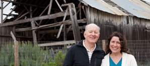
Engineering opportunities
Imagine a robot that travels on the ceiling and helps you out around the house. Try to picture an autonomous, mechanized lifeguard that waits in the water, kicking into high gear when someone starts drowning.
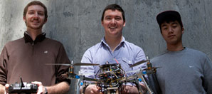
Ready for the spotlight
The African American Theater Arts Troupe does more than put on heart-stirring performances at UCSC.
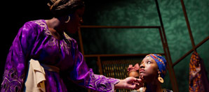
The path to empowerment
Xochitl Rios's father left school in fourth grade, coaxing a living out of the soil. Her mother, who had a third-grade education, raised 12 children in their small village in Central Mexico.
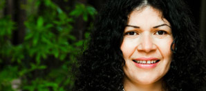

Past and Future.
The 10th Annual Scholarship Benefit Dinner celebrates a decade of community achievement and generosity.
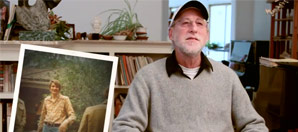
To honor their sons
Proud parents Stephen and Linda Crowe were looking for a meaningful and enduring way to honor their son, Jeremy, a fourth-year undergraduate student in UCSC's computer science program.
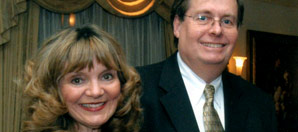
A love letter to McHenry
David Kirk developed video and media libraries at UCSC. Now he's arranged for a planned gift that will support McHenry Library far into the future.
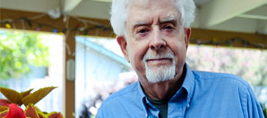
WINTER STORIES

A man who left a legacy
In 2007, Don Rothman and his wife, Diana, marked his retirement by establishing the Don Rothman Award in First-Year Writing to celebrate exceptional student writers and their writing professors.
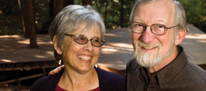
A decade of giving forward
Now in its 10th year, the Scholarship Benefit Dinner has become one of UCSC's premiere fundraising events, highlighting community achievement while helping outstanding students fund their college educations.
Imagining a new life
Now 50, Tello is finally putting those words behind him. He is a literature major at UCSC and the recipient of a prestigious Karl S. Pister Leadership Opportunity Award.
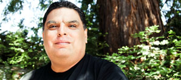
The young and the generous
This year, the Class of 2013 hopes to raise $12,000 for the Senior Legacy Fund, a $2,000 increase over last year's student fundraising efforts. The Senior Fund is a student-initiated, student-funded, and student-controlled giving fund started by the Class of 2010.
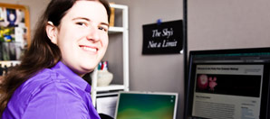
A history of generosity
Anne Irwin will never forget her 70th birthday celebration among the swell sharks and octopuses at the Seymour Marine Discovery Center. It was a kind of homecoming for her.
Celebrating new endowed chairs
UCSC is proud to announce the creation of two brand-new endowed chairs: one in entrepreneurship, and one that will benefit the campus's groundbreaking Global Information Internship Program.
In the company of friends
Neel Sundaresan, senior director of eBay Research Labs, wants to eliminate barriers to jobs in science, technology, engineering, and mathematics. Last year he created a scholarship program that combines philanthropy with mentorship, and scholarships with career guidance.
FALL STORIES
Sharing a love of marine life
When Enid Rusev began volunteering at Long Marine Lab in 1981, the aquarium was housed in a shed across the road from a Brussels sprout field. However, she and her husband, John, saw great potential in this small research and educational facility.
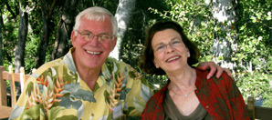
In remembrance of Terry
The student-run nightspot formerly known as Café Revolución was rededicated as the Terry Freitas Café, commemorating a young alumnus who died while helping an indigenous people maintain its ancient culture.
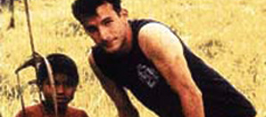
George Hitchcock poetry endowment
When renowned publisher, poet, painter, and lecturer emeritus George Hitchcock died at 96, his longtime partner made a $500,000 gift to UC Santa Cruz to establish The George P. Hitchcock Modern Poetry Fund at Porter College.
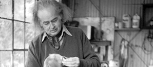
A winning combination
The Chancellor's Undergraduate Internship Program matches students with projects that will help the university. Students are required to work 15 hours per week, attend leadership classes, and have a result at the end of the year. In exchange, they are given a stipend toward their tuition.
Exploring the possibilities
As a young man, Raydan Alhubaishi fled with his family from Yemen. With a Karl S. Pister Leadership Opportunity Award, he was able to transfer to UC Santa Cruz, where the diversity of students, along with supportive and engaging professors, opened his mind to possibilities.
Time after time: Building a legacy
Parents Ken and Marian Brown are loyal supporters of UCSC, and they continue to recognize the campus with their generosity even though their daughter, Monica Brown, graduated 17 years ago.
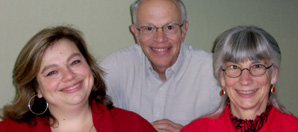
Arts Excellence—make it so
Brannon Braga came up with some of his best ideas about "space, the final frontier" at UC Santa Cruz. Now, Braga, a Star Trek franchise screenwriter and producer, hopes his $100,000 gift to UCSC's Arts Excellence Fund helps other Banana Slugs find inspiration.
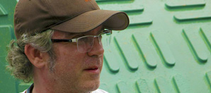